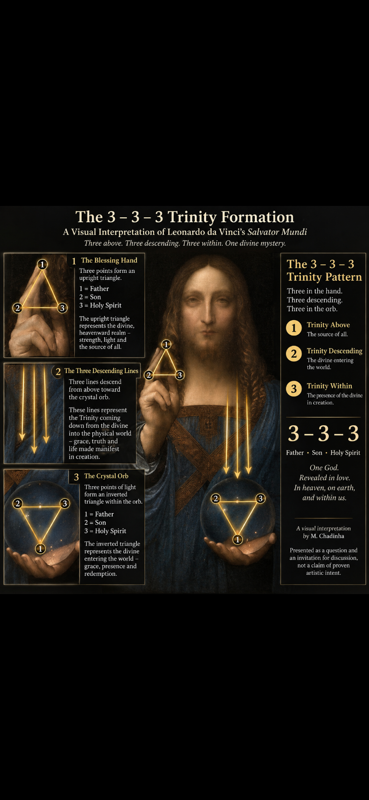

The 3–3–3 Trinity Formation
A Visual Interpretation of Salvator Mundi
Concept & Visual Interpretation — M. Chadinha

Three in the blessing hand. Three descending. Three within the crystal orb.
Father • Son • Holy Spirit — Trinity Above → Trinity Descending → Trinity Within Creation.
This is a visual and symbolic interpretation by M. Chadinha. It is presented as an invitation to examine the geometry, light and Christian symbolism of the work, not as historical proof that Leonardo intentionally encoded 333.
© 2026 M. Chadinha